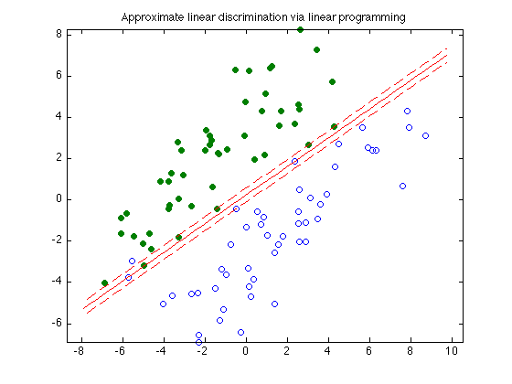

Figure 8.10: Approximate linear discrimination via linear programming
n = 2;
randn('state',2);
N = 50; M = 50;
Y = [1.5+0.9*randn(1,0.6*N), 1.5+0.7*randn(1,0.4*N);
2*(randn(1,0.6*N)+1), 2*(randn(1,0.4*N)-1)];
X = [-1.5+0.9*randn(1,0.6*M), -1.5+0.7*randn(1,0.4*M);
2*(randn(1,0.6*M)-1), 2*(randn(1,0.4*M)+1)];
T = [-1 1; 1 1];
Y = T*Y; X = T*X;
cvx_begin
variables a(n) b(1) u(N) v(M)
minimize (ones(1,N)*u + ones(1,M)*v)
X'*a - b >= 1 - u;
Y'*a - b <= -(1 - v);
u >= 0;
v >= 0;
cvx_end
linewidth = 0.5;
t_min = min([X(1,:),Y(1,:)]);
t_max = max([X(1,:),Y(1,:)]);
tt = linspace(t_min-1,t_max+1,100);
p = -a(1)*tt/a(2) + b/a(2);
p1 = -a(1)*tt/a(2) + (b+1)/a(2);
p2 = -a(1)*tt/a(2) + (b-1)/a(2);
graph = plot(X(1,:),X(2,:), 'o', Y(1,:), Y(2,:), 'o');
set(graph(1),'LineWidth',linewidth);
set(graph(2),'LineWidth',linewidth);
set(graph(2),'MarkerFaceColor',[0 0.5 0]);
hold on;
plot(tt,p, '-r', tt,p1, '--r', tt,p2, '--r');
axis equal
title('Approximate linear discrimination via linear programming');
Calling sedumi: 203 variables, 100 equality constraints
------------------------------------------------------------
SeDuMi 1.21 by AdvOL, 2005-2008 and Jos F. Sturm, 1998-2003.
Alg = 2: xz-corrector, Adaptive Step-Differentiation, theta = 0.250, beta = 0.500
eqs m = 100, order n = 203, dim = 205, blocks = 2
nnz(A) = 200 + 300, nnz(ADA) = 100, nnz(L) = 100
Handling 4 + 1 dense columns.
it : b*y gap delta rate t/tP* t/tD* feas cg cg prec
0 : 4.41E+00 0.000
1 : 2.53E+02 3.79E-01 0.000 0.0860 0.9900 0.9900 -0.18 1 1 4.9E-01
2 : -7.96E+00 1.93E-01 0.000 0.5088 0.9000 0.9000 4.00 1 1 6.0E-01
3 : -6.52E+01 7.28E-02 0.000 0.3774 0.9000 0.9000 3.75 1 1 1.4E-02
4 : -7.51E+01 3.36E-02 0.000 0.4616 0.9000 0.9000 1.05 1 1 7.0E-03
5 : -8.05E+01 1.65E-02 0.000 0.4911 0.9000 0.9000 0.68 1 1 3.9E-03
6 : -8.46E+01 7.66E-03 0.000 0.4636 0.9000 0.9000 0.59 1 1 2.1E-03
7 : -8.70E+01 3.86E-03 0.000 0.5038 0.9000 0.9000 0.63 1 1 1.2E-03
8 : -8.81E+01 2.36E-03 0.000 0.6116 0.9000 0.9000 0.64 1 1 8.3E-04
9 : -8.88E+01 1.63E-03 0.000 0.6907 0.9000 0.9000 0.55 1 1 6.2E-04
10 : -8.94E+01 1.06E-03 0.000 0.6528 0.9000 0.9000 0.49 1 1 4.6E-04
11 : -8.98E+01 5.01E-04 0.000 0.4709 0.9000 0.9000 0.30 1 1 3.3E-04
12 : -9.02E+01 2.93E-04 0.000 0.5853 0.9000 0.9000 -0.30 1 1 3.0E-04
13 : -9.17E+01 1.56E-04 0.000 0.5334 0.9000 0.9000 0.18 1 1 1.6E-04
14 : -9.19E+01 1.09E-04 0.000 0.6959 0.9000 0.9000 0.42 1 1 1.3E-04
15 : -9.21E+01 8.46E-05 0.000 0.7775 0.9000 0.9000 0.13 1 1 1.2E-04
16 : -9.29E+01 4.58E-05 0.000 0.5413 0.9000 0.9000 0.61 1 1 6.2E-05
17 : -9.34E+01 1.90E-05 0.000 0.4141 0.9000 0.9000 0.75 1 1 2.8E-05
18 : -9.36E+01 9.05E-06 0.000 0.4774 0.9000 0.9000 0.86 1 1 1.4E-05
19 : -9.37E+01 4.81E-06 0.000 0.5317 0.9000 0.9000 0.78 1 1 7.9E-06
20 : -9.38E+01 2.08E-07 0.000 0.0433 0.9900 0.9900 0.98 1 1 3.5E-07
21 : -9.39E+01 6.14E-11 0.000 0.0003 0.9999 0.9999 1.00 1 1 1.5E-10
iter seconds digits c*x b*y
21 0.1 10.6 -9.3851428799e+01 -9.3851428801e+01
|Ax-b| = 2.9e-10, [Ay-c]_+ = 7.0E-09, |x|= 8.9e+01, |y|= 9.7e+00
Detailed timing (sec)
Pre IPM Post
0.000E+00 9.000E-02 1.000E-02
Max-norms: ||b||=1, ||c|| = 1.878335e+02,
Cholesky |add|=0, |skip| = 0, ||L.L|| = 1.
------------------------------------------------------------
Status: Solved
Optimal value (cvx_optval): +6.14857
